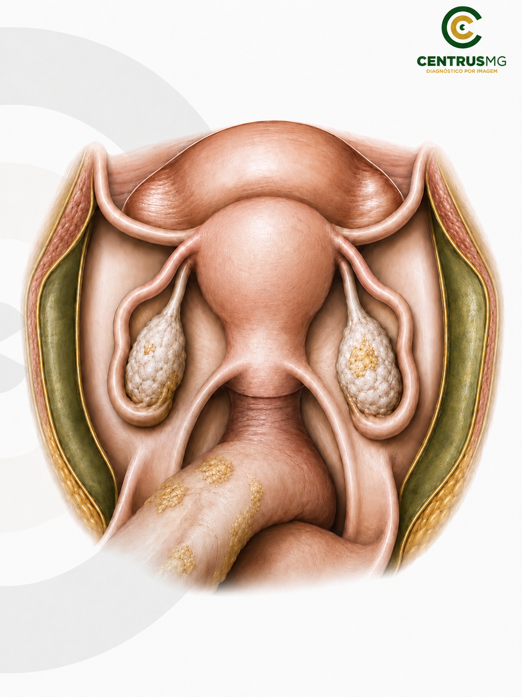
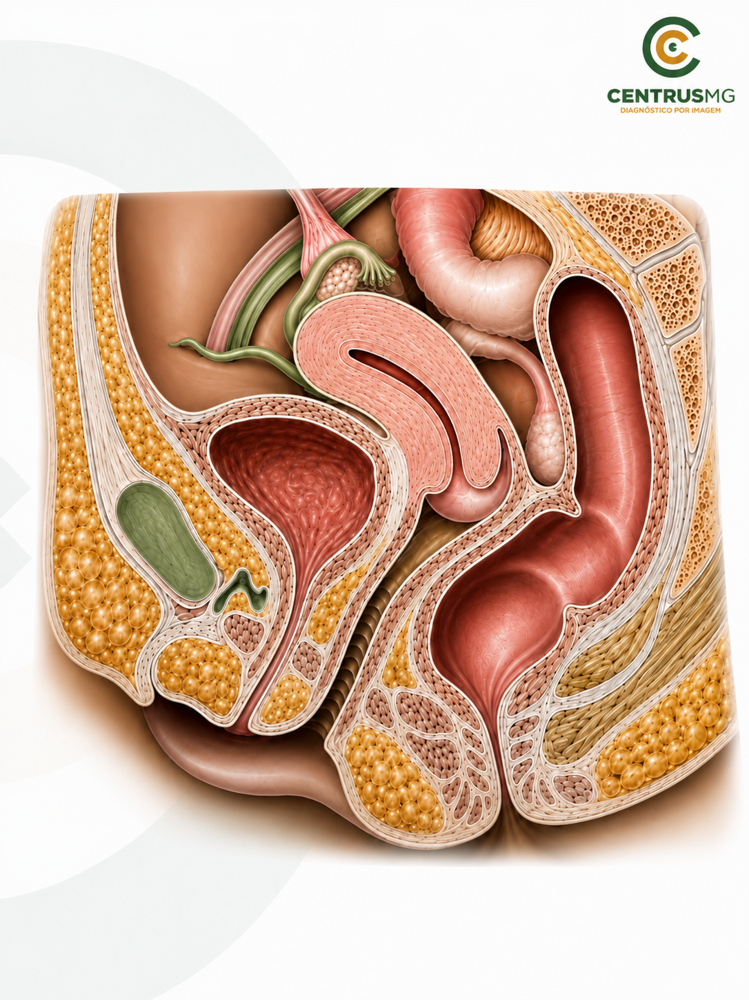

Pergunta
Respondida
A lesão de 0,6 × 0,2 cm está no ligamento uterossacro esquerdo?
Use o microfone para transcrever os achados ao vivo e confira o texto antes de salvar.
O conteúdo ditado aparecerá aqui. Não informe nome, CPF, telefone, e-mail ou outro identificador da paciente.
Fale em português e acompanhe a transcrição na caixa acima.
Microfone pronto.
A inteligência artificial pode errar. Confira categoria, localização, lado e medidas.
O exemplo repetiu o lado direito. O mapa não pode avançar com uma lateralidade duvidosa.
A lesão de 0,6 × 0,2 cm está no ligamento uterossacro esquerdo?
Revise as duas vistas e os achados estruturados antes de confirmar o resultado.
A montagem futura começará por estas imagens sem lesões. A assinatura acompanha o médico selecionado.

Daniel
DanielA IA editará uma cópia do mapa. O mapa-base original permanece preservado e a imagem só será aceita depois da sua conferência.
Gere uma única alternativa com os mesmos dados para comparar qualidade, posição e tempo.
As lesões abaixo vieram do ditado confirmado. Confira os dados e a posição antes de confirmar o mapa.
Esta conclusão é demonstrativa. Nenhum arquivo real foi criado ou salvo hoje.
O Supabase mostra somente os mapas pertencentes ao usuário que está logado.
Carregando seus mapas...
Acompanhe somente os seus mapas criados hoje, sem alterar nenhum registro.
Carregando o painel do dia...
0 lesões estruturadas nos mapas de hoje